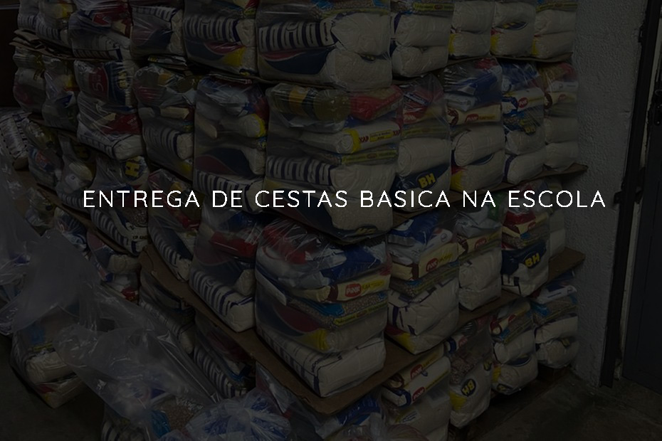

No dia 08/05/2021 a Escola Estadual Maria Luiza Miranda Bastos vai distribuir cestas basicas para seus alunos. A cesta basica acompanha arroz, feijão, óleo, sal, açúcar, café, molho de tomate, macarrão espaguete ou parafuso, sardinha/atum, salsicha/charque, milho/ervilha ou seleta de legumes, farinha de trigo/mandioca, biscoito doce ou salgado, pão de forma, manteiga, banana, leite em pó.
